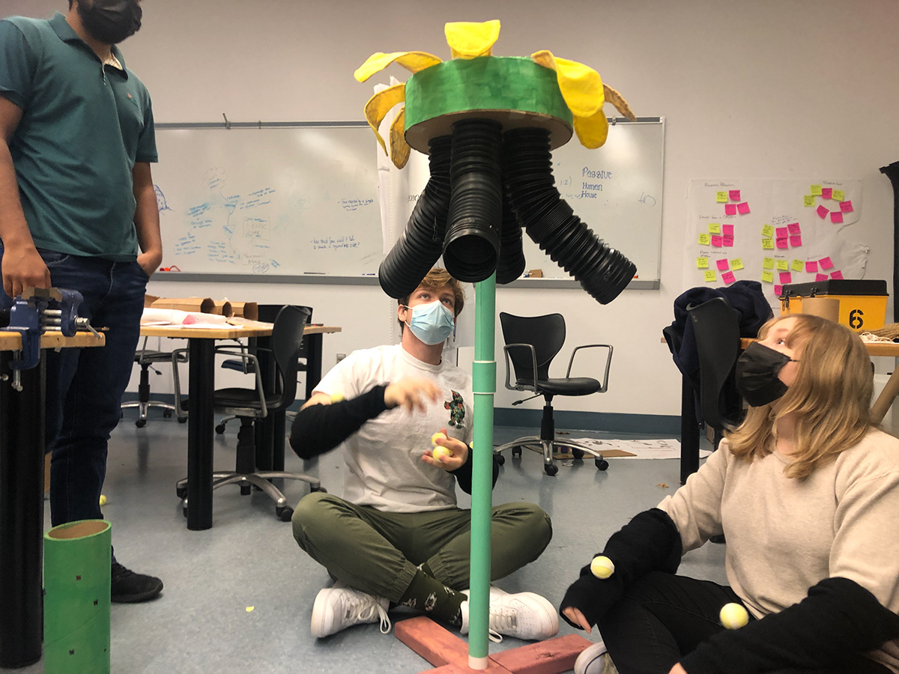
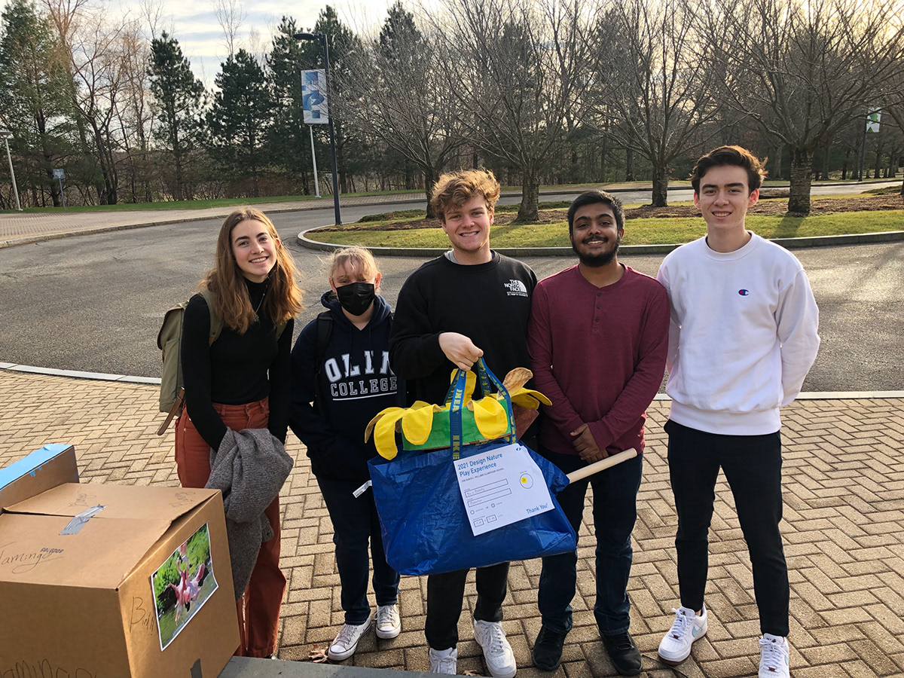
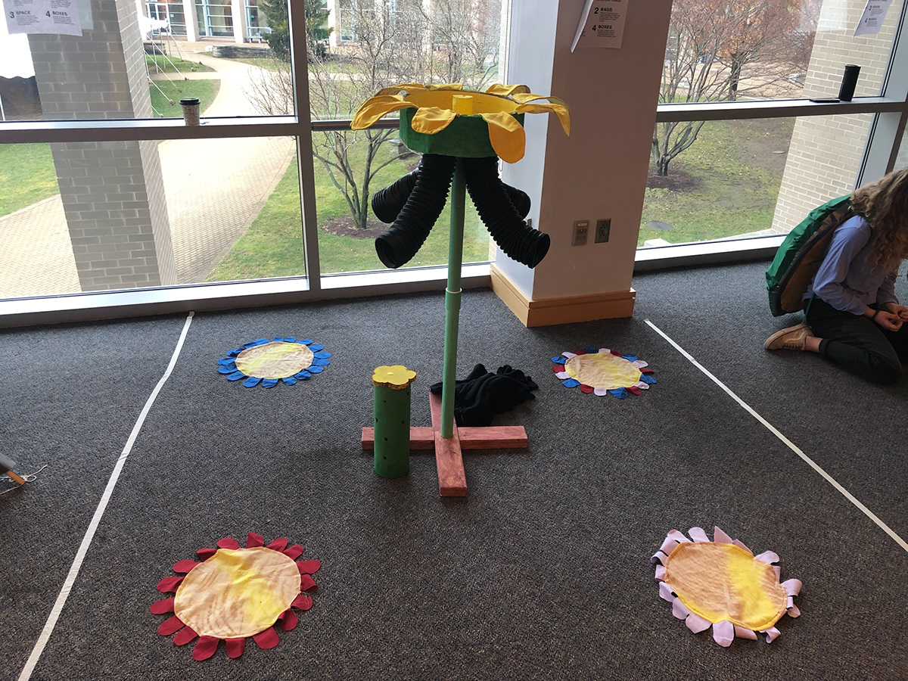

Design Nature



First-semester students at Olin College take a class called Design Nature, where one of the primary projects is to design a play experience for fourth graders inspired by the behavior of an animal. My team chose to make a game based on the pollinating behavior of butterflies. Before settling on the pollinating behavior, though, we researched other butterfly behaviors, such as their unique flying movement, which allows them to walk functionally after losing legs, and ideated for play experiences involving those movements. We read research papers about butterflies, researched the needs of our stakeholders, created a design goal and project timeline, and went through multiple design reviews.
For our final project, we made dozens of "pollen balls" with Velcro exteriors meant to stick to the player's butterfly fabric arms which is to simulate a butterfly's pollen collecting leg hairs, constructed an extendable flower tower meant to mimic a flower that a butterfly would interact with in nature, and designed a game around throwing pollen up into the flower and collecting it on your "butterfly legs" and redistributing it to other butterflies. We also added a component of the game where students would have to stay seated on their own flower pad during the game after our professor highlighted the safety issues around children running around the flower tower and possibly knocking it down. We tested the game ourselves and with other classmates, and went through a final safety check and review with a professor before Play Day, when groups of real fourth-graders played our game and gave us feedback on it — overall, we had a positive response!